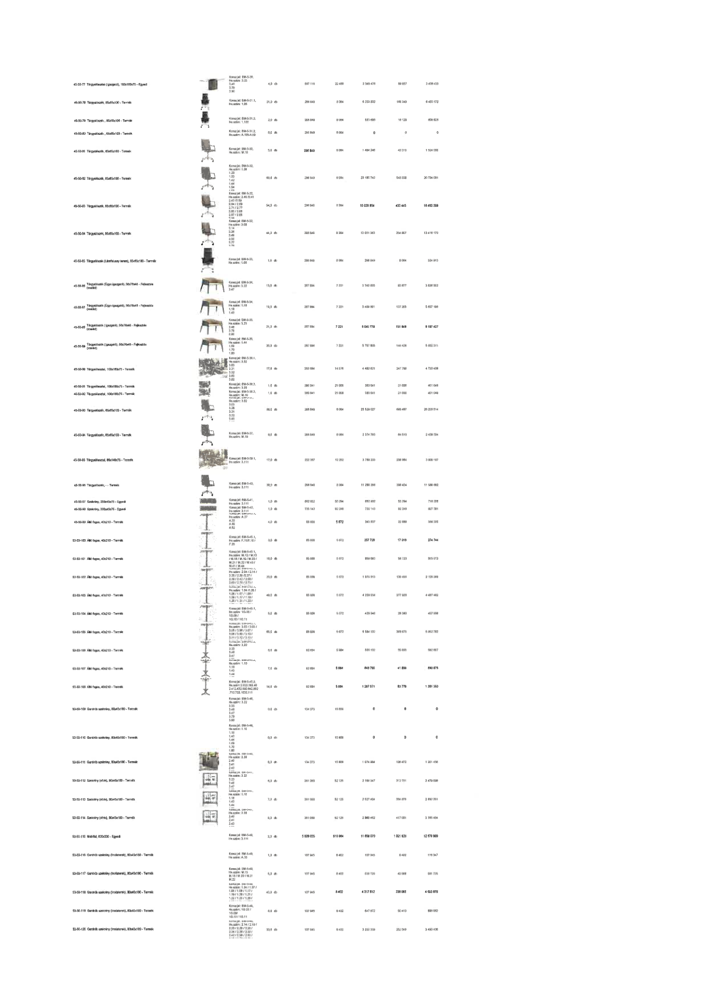

| Tétel | Megjegyzés | Menny. | Egys. | Anyag e.ár (net HUF) | Díj e.ár (net HUF) | Anyag összesen (net HUF) | Díj összesen (net HUF) | Anyag+Díj összesen (net HUF) |
|---|---|---|---|---|---|---|---|---|
| 45-50-78 Tárgyalószék, 65x65x100 - Termék | Konszig jel: BM-5-31.1 | 21,0 | db | 296 849 | 8 064 | 6 233 832 | 169 340 | 6 403 172 |
| 45-50-79 Tárgyalószék, 65x65x100 - Termék | Konszig jel: BM-5-31.2 | 2,0 | db | 296 849 | 8 064 | 593 698 | 16 128 | 609 825 |
| 45-50-80 Tárgyalószék, 65x65x100 - Termék | Konszig jel: BM-5-31.2 | 0,0 | db | 296 849 | 8 064 | 0 | 0 | 0 |
| 45-50-81 Tárgyalószék, 65x65x100 - Termék | Konszig jel: BM-5-32 | 5,0 | db | 296 849 | 8 064 | 1 484 246 | 40 319 | 1 524 565 |
| 45-50-82 Tárgyalószék, 65x65x100 - Termék | Konszig jel: BM-5-32 | 68,0 | db | 296 849 | 8 064 | 20 185 742 | 548 338 | 20 734 081 |
| 45-50-83 Tárgyalószék, 65x65x100 - Termék | Konszig jel: BM-5-32 | 54,0 | db | 296 849 | 8 064 | 16 029 854 | 435 445 | 16 465 299 |
| 45-50-84 Tárgyalószék, 65x65x100 - Termék | Konszig jel: BM-5-32 | 44,0 | db | 296 849 | 8 064 | 13 061 363 | 354 807 | 13 416 170 |
| 45-50-85 Tárgyalószék (Látványtári terem), 55x55x100 - Termék | Konszig jel: BM-5-33 | 1,0 | db | 296 849 | 8 064 | 296 849 | 8 064 | 304 913 |
| 45-50-86 Tárgyalószék (Ügyv. igazgató), 56x78x48 - Fejlesztés (családi) | Konszig jel: BM-5-34 | 13,0 | db | 287 894 | 7 221 | 3 742 625 | 93 877 | 3 836 502 |
| 45-50-87 Tárgyalószék (Ügyv. igazgató), 56x78x48 - Fejlesztés (családi) | Konszig jel: BM-5-34 | 19,0 | db | 287 894 | 7 221 | 5 469 991 | 137 205 | 5 607 196 |
| 45-50-88 Tárgyalószék (Igazgató), 56x78x48 - Fejlesztés (családi) | Konszig jel: BM-5-35 | 21,0 | db | 287 894 | 7 221 | 6 045 779 | 151 648 | 6 197 427 |
| 45-50-89 Tárgyalószék (Igazgató), 56x78x48 - Fejlesztés (családi) | Konszig jel: BM-5-35 | 20,0 | db | 287 894 | 7 221 | 5 757 885 | 144 426 | 5 902 311 |
| 45-50-90 Tárgyalóasztal, 100x160x75 - Termék | Konszig jel: BM-5-36.1 | 17,0 | db | 263 684 | 14 574 | 4 482 621 | 247 768 | 4 730 408 |
| 45-50-91 Tárgyalóasztal, 100x180x75 - Termék | Konszig jel: BM-5-36.2 | 1,0 | db | 380 041 | 21 008 | 380 041 | 21 008 | 401 049 |
| 45-50-92 Tárgyalóasztal, 100x180x75 - Termék | Konszig jel: BM-5-36.3 | 1,0 | db | 380 041 | 21 008 | 380 041 | 21 008 | 401 049 |
| 45-50-93 Tárgyalószék, 65x65x100 - Termék | Konszig jel: BM-5-32 | 86,0 | db | 296 849 | 8 064 | 25 529 027 | 693 487 | 26 222 514 |
| 45-50-94 Tárgyalószék, 65x65x100 - Termék | Konszig jel: BM-5-37 | 8,0 | db | 296 849 | 8 064 | 2 374 793 | 64 510 | 2 439 304 |
| 45-50-95 Tárgyalószék, 85x140x75 - Termék | Konszig jel: BM-5-39.1 | 17,0 | db | 222 307 | 13 293 | 3 789 233 | 225 964 | 4 015 197 |
| 45-50-96 Tárgyalószék, - Termék | Konszig jel: BM-5-40 | 38,0 | db | 296 849 | 8 064 | 11 280 268 | 306 424 | 11 586 692 |
| 45-50-97 Szekrény, 250x45x75 - Egyedi | Konszig jel: BM-5-41.1 | 1,0 | db | 662 932 | 55 294 | 662 932 | 55 294 | 718 226 |
| 45-50-98 Szekrény, 300x45x75 - Egyedi | Konszig jel: BM-5-41.2 | 1,0 | db | 735 143 | 92 248 | 735 143 | 92 248 | 827 391 |
| 45-50-99 Álló fogas, 40x210 - Termék | Konszig jel: BM-5-42 | 4,0 | db | 85 909 | 5 572 | 343 637 | 22 288 | 365 925 |
| 45-50-100 Álló fogas, 40x210 - Termék | Konszig jel: BM-5-45.1 | 3,0 | db | 85 909 | 5 572 | 257 728 | 17 015 | 274 744 |
| 45-50-101 Álló fogas, 40x210 - Termék | Konszig jel: BM-5-45.1 | 10,0 | db | 85 909 | 5 572 | 859 093 | 55 720 | 914 813 |
| 45-50-102 Álló fogas, 40x210 - Termék | Konszig jel: BM-5-45.1 | 23,0 | db | 85 909 | 5 572 | 1 975 913 | 130 455 | 2 106 369 |
| 45-50-103 Álló fogas, 40x210 - Termék | Konszig jel: BM-5-45.1 | 49,0 | db | 85 909 | 5 572 | 4 209 554 | 277 928 | 4 487 482 |
| 45-50-104 Álló fogas, 40x210 - Termék | Konszig jel: BM-5-45.1 | 5,0 | db | 85 909 | 5 572 | 429 546 | 28 360 | 457 906 |
| 45-50-105 Álló fogas, 40x210 - Termék | Konszig jel: BM-5-45.1 | 65,0 | db | 85 909 | 5 572 | 5 584 102 | 368 679 | 5 952 782 |
| 45-50-106 Álló fogas, 40x210 - Termék | Konszig jel: BM-5-45.2 | 6,0 | db | 92 654 | 5 984 | 555 922 | 35 905 | 591 827 |
| 45-50-107 Álló fogas, 40x210 - Termék | Konszig jel: BM-5-45.2 | 7,0 | db | 92 684 | 5 984 | 648 785 | 41 889 | 690 675 |
| 45-50-108 Álló fogas, 40x210 - Termék | Konszig jel: BM-5-45.2 | 14,0 | db | 92 684 | 5 984 | 1 297 571 | 83 779 | 1 381 350 |
| 45-50-109 Gardrób szekrény, 80x45x180 - Termék | Konszig jel: BM-5-46 | 0,0 | db | 134 373 | 15 809 | 0 | 0 | 0 |
| 45-50-110 Gardrób szekrény, 80x45x180 - Termék | Konszig jel: BM-5-46 | 0,0 | db | 134 373 | 15 809 | 0 | 0 | 0 |
| 45-50-111 Gardrób szekrény, 80x45x180 - Termék | Konszig jel: BM-5-46 | 8,0 | db | 134 373 | 15 809 | 1 074 984 | 126 472 | 1 201 456 |
| 45-50-112 Szekrény (Vitrin), 80x45x180 - Termék | Konszig jel: BM-5-47 | 6,0 | db | 361 058 | 52 125 | 2 166 347 | 312 751 | 2 479 098 |
| 45-50-113 Szekrény (Vitrin), 80x45x180 - Termék | Konszig jel: BM-5-47 | 7,0 | db | 361 058 | 52 125 | 2 527 404 | 364 876 | 2 892 281 |
| 45-50-114 Szekrény (Vitrin), 80x45x180 - Termék | Konszig jel: BM-5-47 | 8,0 | db | 361 058 | 52 125 | 2 888 462 | 417 001 | 3 305 464 |
| 45-50-115 Mobilfal, 820x330 - Egyedi | Konszig jel: BM-5-48 | 2,0 | db | 5 829 035 | 510 964 | 11 658 070 | 1 021 929 | 12 679 999 |
| 45-50-116 Gardrób szekrény (irodaterek), 80x45x180 - Termék | Konszig jel: BM-5-49 | 1,0 | db | 107 945 | 8 402 | 107 945 | 8 402 | 116 347 |
| 45-50-117 Gardrób szekrény (irodaterek), 80x45x180 - Termék | Konszig jel: BM-5-49 | 5,0 | db | 107 945 | 8 402 | 539 725 | 42 009 | 581 735 |
| 45-50-118 Gardrób szekrény (irodaterek), 80x45x180 - Termék | Konszig jel: BM-5-49 | 40,0 | db | 107 945 | 8 402 | 4 317 812 | 336 065 | 4 653 878 |
| 45-50-119 Gardrób szekrény (irodaterek), 80x45x180 - Termék | Konszig jel: BM-5-49 | 6,0 | db | 107 945 | 8 402 | 647 672 | 50 410 | 698 082 |
| 45-50-120 Gardrób szekrény (irodaterek), 80x45x180 - Termék | Konszig jel: BM-5-49 | 30,0 | db | 107 945 | 8 402 | 3 238 359 | 252 049 | 3 490 408 |
